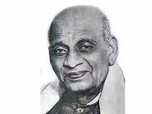

Sardar Vallabhbhai Patel
An Indian lawyer, and statesman who served as the first Deputy Prime Minister and Home Minister of India.
1947 to 1950.
" One is the war we wage against injustice and the other we fight against our own weaknesses "
About
- Vallabhbhai Jhaverbhai Patel,one of the six children of Jhaverbhai Patel and Ladba, was born in Nadiad, Gujarat. He followed Vaishnavism and belonged to Pushtimarg sect of Mahaprabhu Vallabhacharya and took the diksha from the descendant of Vallabhacharya. Patel's date of birth was never officially recorded; Patel entered it as 31 October on his matriculation examination papers. He belonged to the Leva Patel community of Central Gujarat, although after his fame, both Leva Patel and Kadava Patidar have claimed him as one of their own.
- Patel travelled to attend schools in Nadiad, Petlad, and Borsad, living self-sufficiently with other boys. He reputedly cultivated a stoic character. A popular anecdote recounts that he lanced his own painful boil without hesitation, even as the barber charged with doing it trembled. When Patel passed his matriculation at the relatively late age of 22, he was generally regarded by his elders as an unambitious man destined for a commonplace job. Patel himself, though, harboured a plan to study to become a lawyer, work and save funds, travel to England, and become a barrister.
- Patel spent years away from his family, studying on his own with books borrowed from other lawyers, passing his examinations within two years. Fetching his wife Jhaverba from her parents' home, Patel set up his household in Godhra and was called to the bar. During the many years it took him to save money, Patel – now an advocate – earned a reputation as a fierce and skilled lawyer. The couple had a daughter, Maniben, in 1903 and a son, Dahyabhai, in 1905. Patel also cared for a friend suffering from the Bubonic plague when it swept across Gujarat. When Patel himself came down with the disease, he immediately sent his family to safety, left his home, and moved into an isolated house in Nadiad (by other accounts, Patel spent this time in a dilapidated temple); there, he recovered slowly.
- Patel practised law in Godhra, Borsad, and Anand while taking on the financial burdens of his homestead in Karamsad. Patel was the first chairman and founder of "Edward Memorial High School" Borsad, today known as Jhaverbhai Dajibhai Patel High School. When he had saved enough for his trip to England and applied for a pass and a ticket, they were addressed to "V. J. Patel," at the home of his elder brother Vithalbhai, who had the same initials as Vallabhai. Having once nurtured a similar hope to study in England, Vithalbhai remonstrated his younger brother, saying that it would be disreputable for an older brother to follow his younger brother. In keeping with concerns for his family's honour, Patel allowed Vithalbhai to go in his place.
- In 1909 Patel's wife Jhaverba was hospitalised in Bombay (present-day Mumbai) to undergo major surgery for cancer. Her health suddenly worsened and, despite successful emergency surgery, she died in the hospital. Patel was given a note informing him of his wife's demise as he was cross-examining a witness in court. According to witnesses, Patel read the note, pocketed it, and continued his cross-examination and won the case. He broke the news to others only after the proceedings had ended.
- Patel decided against marrying again. He raised his children with the help of his family and sent them to English-language schools in Bombay. At the age of 36, he journeyed to England and enrolled at the Middle Temple Inn in London. Completing a 36-month course in 30 months, Patel finished at the top of his class despite having had no previous college background.
He had made a pact with his brother Vithalbhai to support his entry into politics in the Bombay Presidency, while Patel remained in Ahmedabad to provide for the family Wikipedia entry.
Gallery



" Ours is a non-violent war, it is Dharma Yuddha. "
Young men and women are to build up a strong character. A nation's greatness was reflected in the character of the people. If it was sullied by selfishness, such a people could not prosper or achieve great things. Selfishness had its place in life as everyone had to look to his own needs and that of his family, but it could not made the be-all and end-all of life.